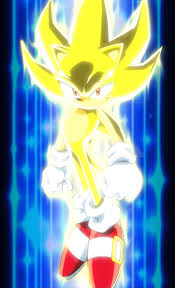
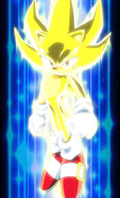

Batman is a superhero who appears in American comic books published by DC Comics. Batman was created by artist Bob Kane and writer Bill Finger, and debuted in the 27th issue of the comic book Detective Comics on March 30, 1939. In the DC Universe continuity, Batman is the alias of Bruce Wayne, a wealthy American playboy, philanthropist, and owner of Wayne Enterprises based in Gotham City. Kane, Finger, and future DC writers accompanied Batman with supporting characters, including his sidekick Robin, allies Alfred Pennyworth and James Gordon, and foes such as Catwoman, the Scarecrow, the Penguin, and his archenemy, the Joker. Batman's origin story features him swearing vengeance against criminals after witnessing the murder of his parents Thomas and Martha; he trains himself physically and intellectually, crafts a bat-inspired persona, and monitors the Gotham streets at night. Kane conceived Batman in early 1939 to capitalize on the popularity of DC's Superman; although Kane frequently claimed sole creation credit, Finger substantially developed the concept from a generic superhero into something more bat-like. The character received his own spin-off publication, Batman, in 1940. Batman was originally introduced as a ruthless vigilante who frequently killed or maimed criminals, but evolved into a character with a stringent moral code and strong sense of justice. Unlike most superheroes, Batman does not possess any superpowers, instead relying on his intellect, fighting skills, and wealth. The 1960s Batman television series used a camp aesthetic, which continued to be associated with the character for years after the show ended. Various creators worked to return the character to his darker roots in the 1970s and 1980s, culminating with the 1986 miniseries The Dark Knight Returns by Frank Miller.
.jpg) 

Super Sonic (スーパーソニック Sūpā Sonikku?)[1] is a transformation that appears in the Sonic the Hedgehog series. It is the Super State of Sonic the Hedgehog, achieved by harnessing the power of the seven Chaos Emeralds.[2] Since its debut, this form has been Sonic's most commonly used transformation. Originally, Super Sonic was merely a power-up that Sonic would occasionally use. However, after using it to foil Dr. Eggman during the climax of the Angel Island incident, Super Sonic would become Sonic's greatest trump card against his adversaries, providing him with the power and abilities to save the world on numerous occasions.